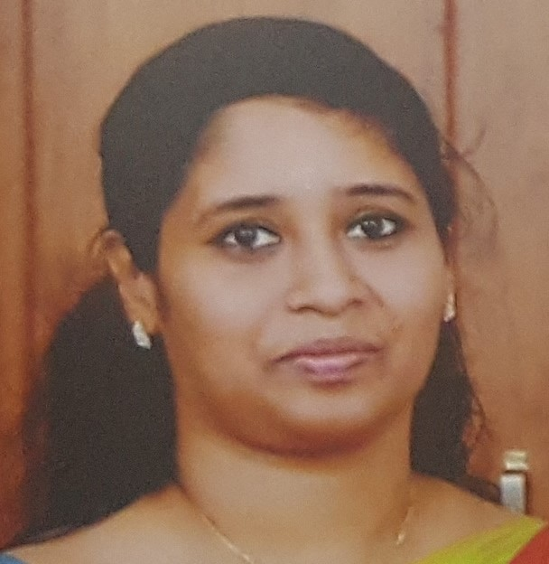
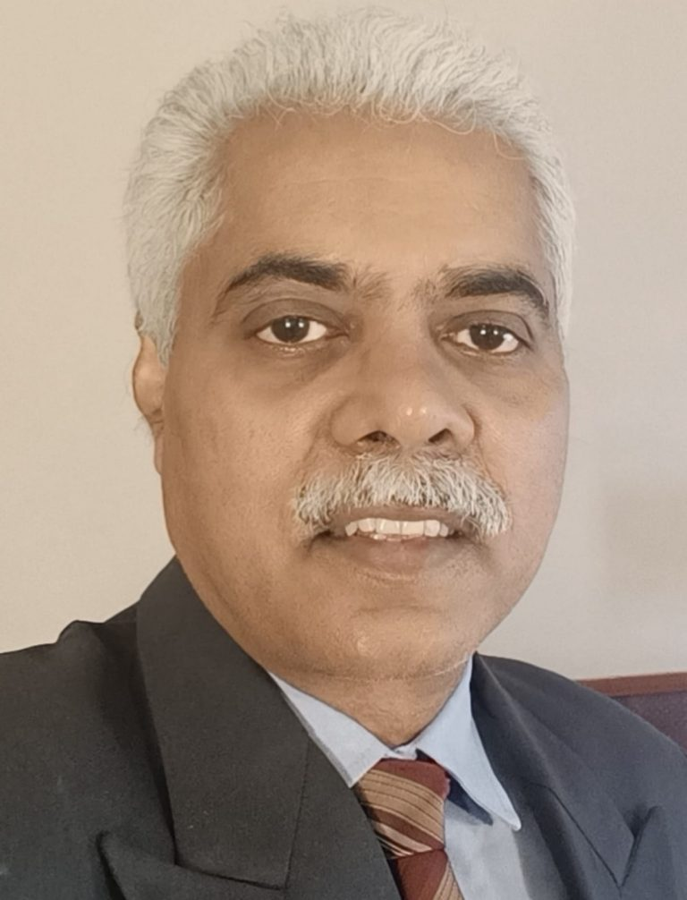
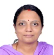
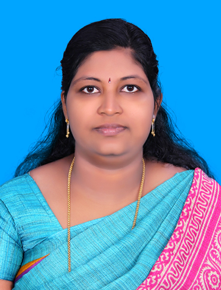
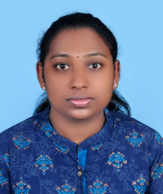
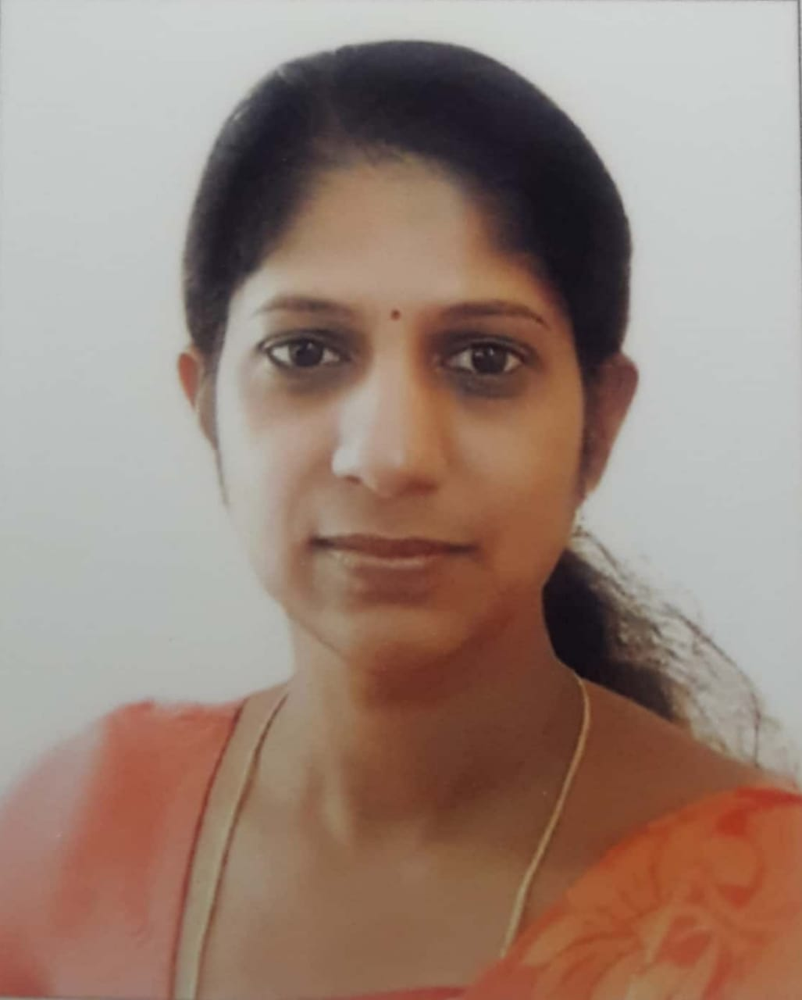
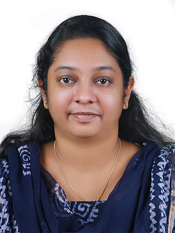
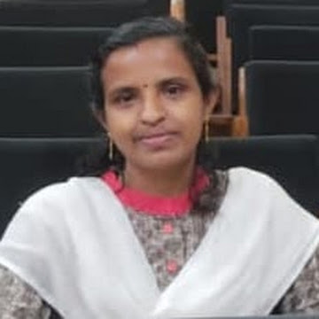

PROFILE
- 1997 - Year of Establishment
- 1997 - UG course in Computer Science
- 1997 - Computer Science as Complementary - UG
- 1999 - Computer Science as Vocational subject - UG
- 2000 - UG in Computer Science & Computer Applications (SDE)
- 2000 - PGDCA (CEC)
- 2008 - BCom with Computer Applications (SDE)
ACADEMIC PROGRAMME
- As core subject to the B.Sc Computer Science Course
- As vocational subject to the B.Sc Physics and Computer Application Course
- As complementary/subsidiary subject to the B.Sc Statistics Course
- It follows the syllabus and course pattern prescribed by the University of Kerala.
MISSION
- Equip graduates with the expertise to excel in the IT industry and support lifelong professional growth.
- Collaborate with educational and research partners.
- Nurture graduates’ interpersonal and entrepreneurial skills.
- Prepare graduates for leadership roles in both the profession and academia.
GOALS
The objective of the Department is to produce graduates who:- Are productive professionals in some information technology discipline.
- Pursue higher professional degrees.
- Become successful entrepreneurs and managers.
- Have a broad knowledge and wide range of interests.
- Are valuable members of their general community.
- Take a leadership role in their chosen field.
Courses Offered
- B.Sc Computer Science
Faculty Members
| Sl. No. | Faculty Name | Designation | Photo | Researcher Profile |
|---|---|---|---|---|
| 1 | Prof.(Dr.) Tina Elizabeth Mathew | Vice Principal & Head of the Department |  |
Google Scholar ORCID |
| 2 | Prof.(Dr.) Gladston Raj S | Professor |  | Google Scholar |
| 3 | Dr. Sreeja S. | Assistant Professor |  | Google Scholar |
| 4 | Smt. Anju T.E. | Assistant Professor |  | Google Scholar |
| 5 | Smt. Leena Mol O | Assistant Professor |  | Google Scholar |
| 6 | Smt. Jovi Joseph | Assistant Professor |  | Google Scholar |
| 7 | Smt. Hridya Sobhanam | Assistant Professor |  | Google Scholar |
| 8 | Dr. Sreela S.R. | Assistant Professor |  |
Web of Science Scopus |
Details of Courses
B.Sc Computer Science
- Core Subject:
- Computer Science
- Eligibility:
- A pass in Higher Secondary / Technical Higher Secondary / Vocational Higher Secondary Examination of Govt. of Kerala or any equivalent examination recognized by the University of Kerala, with Mathematics as one of the optional subjects.
Syllabus
- FYUGP Syllabus (2024 Admission onwards)
- Syllabus (2021 Admissions onwards)
- Syllabus (2018 Admissions onwards)
- Syllabus (2015 Admissions onwards)
UNICS Newsletter
Seminars / Extension Activities
- Ethical Implications of Hacking – Seminar – 23rd March 2023
- Application of FOSS in Industry – Seminar – 16-03-2023
- Introduction to Natural Language Processing – Seminar – 23-02-2023
- Artificial Intelligence in Science – Seminar – 25 February 2022
- Machine Learning (TechSaksham Initiative) – Webinar – 21 January 2022
- National Seminar on ICT - Innovations & Applications – 6–8 January 2016
- Spectral Signal Analysis & Dot Net Technologies – February 2006
University Toppers
- Sreeja S – 1999-2000 – 1st Rank
- Mahima S – 2001-02 – 2nd Rank
- Anand R Nair – 2009-10 – 1st Rank
- Shabna T R – 2016-17 – 4th Rank
- Sreelekshmi M S – 2017-18 – 3rd Rank
- Reshma A S – 2018-19 – 3rd Rank
- Bency Mariyam Thomas – 2018-19 – 6th Rank
- Adeeshaya D – 2019-20 – 1st Rank
- Shigin S – 2020-21 – 8th Rank
- Noufiya A N – 2020-21 – 11th Rank
- Akshaya S U – 2022-23 – 4th Rank
📚 Research Highlights
🎓 Research
- Research Centre: CDIT (Affiliated to University of Kerala)
- PhDs Enrolled: 18 | Awarded: 9
- Publications: 45 (2018–2023)
- 2 Best Paper Awards (2022–23)
🏢 Infrastructure
- 2 Networked Labs | 1 Hardware Lab
- ICT-enabled Classrooms
- Interactive Panel & Digital Podium
- Wi-Fi, Projectors & UPS Support
🤝 Student Support
- Bridge Courses & PG Entrance Coaching
- Laptop Support (SC Students)
- Mentoring via Jeevani
- Internships: CDAC, IHRDE, Shristi Systems
🏆 Student Achievements
- 8 University Ranks (2014–2023)
- State & Interzone Sports Awards
- 5 YIP Innovators (2024 - District)
- NET, SET, CELPIP Qualifiers
🌱 Industry & Community Linkages
- ICFOSS & ICTAK Collaborations
- MOU with Networkz Systems
- Digital Survey – Pullampara Village
- Green Campus – Student Veg Garden
🚀 Future Plans
- Upgrade to PG Department
- Establish as a Research Centre
- Expand Industry Alliances
- Boost Community Engagement